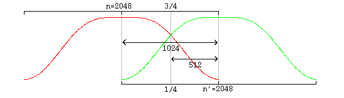
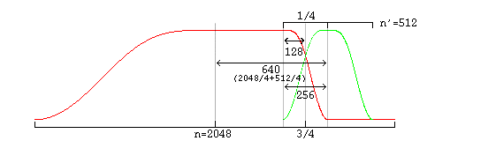

Vorbis provides none of its own framing, synchronization or protection against errors; it is solely a method of accepting input audio, dividing it into individual frames and compressing these frames into raw, unformatted 'packets'. The decoder then accepts these raw packets in sequence, decodes them, synthesizes audio frames from them, and reassembles the frames into a facsimile of the original audio stream. Vorbis is a free-form VBR codec and packets have no minimum size, maximum size, or fixed/expected size. Packets are designed that they may be truncated (or padded) and remain decodable; this is not to be considered an error condition and is used extensively in bitrate management in peeling. Both the transport mechanism and decoder must allow that a packet may be any size, or end before or after packet decode expects.
Vorbis packets are thus intended to be used with a transport mechanism that provides free-form framing, sync, positioning and error correction in accordance with these design assumptions, such as Ogg (for file transport) or RTP (for network multicast). For purposes of a few examples in this document, we will assume that Vorbis is to be embedded in an Ogg stream specifically, although this is by no means a requirement or fundamental assumption in the Vorbis design.
The specifications for embedding Vorbis into an Ogg transport stream is in a separate document.
The single most controversial design decision in Vorbis [and the most unusual for a Vorbis developer to keep in mind] is that the entire probability model of the codec, the Huffman and VQ codebooks, is packed into the bitstream header along with extensive CODEC setup parameters (often several hundred fields). This makes it impossible, as it would be with MPEG audio layers, to embed a simple frame type flag in each audio packet, or begin decode at any frame in the stream without having previously fetched the codec setup header. [Note: Vorbis *can* initiate decode at any arbitrary packet within a bitstream so long as the codec has been initialized/setup with the setup headers].
Thus, Vorbis headers are both required for decode to begin and relatively large as bitstream headers go. The header size is unbounded, although for streaming a rule-of-thumb of 4kB or less is recommended (and Xiph.Org's Vorbis encoder follows this suggestion).
Our own design work indicates the the primary liability of the required header is in mindshare; it is an unusual design and thus causes some amount of complaint among engineers as this runs against current design trends (and also points out limitations in some existing software/interface designs, such as Windows' ACM codec framework). However, we find that it does not fundamentally limit Vorbis's suitable application space.

The mode mechanism is used to encode a frame according to one of multiple possible methods with the intention of choosing a method best suited to that frame. Different modes are, e.g. how frame size is changed from frame to frame. The mode number of a frame serves as a top level configuration switch for all other specific aspects of frame decode.
A 'mode' configuration consists of a frame size setting, window type (always 0, the Vorbis window, in Vorbis I), transform type (always type 0, the MDCT, in Vorbis I) and a mapping number. The mapping number specifies which mapping configuration instance to use for low-level packet decode and synthesis.
A 'submap' is a configuration/grouping that applies to a subset of floor and residue vectors within a mapping. The submap functions as a last layer of indirection such that specific special floor or residue settings can be applied not only to all the vectors in a given mode, but also specific vectors in a specific mode. Each submap specifies the proper floor and residue instance number to use for decoding that submap's spectral floor and spectral residue vectors.
As an example:
Assume a Vorbis stream that contains six channels in the standard 5.1 format. The sixth channel, as is normal in 5.1, is bass only. Therefore it would be wasteful to encode a full-spectrum version of it as with the other channels. The submapping mechanism can be used to apply a full range floor and residue encoding to channels 0 through 4, and a bass-only representation to the bass channel, thus saving space. In this example, channels 0-4 belong to submap 0 (which indicates use of a full-range floor) and channel 5 belongs to submap 1, which uses a bass-only representation.
A floor encoding may be of two types. Floor 0 uses a packed LSP representation on a dB amplitude scale and Bark frequency scale. Floor 1 represents the curve as a piecewise linear interpolated representation on a dB amplitude scale and linear frequency scale. The two floors are semantically interchangeable in encoding/decoding. However, floor type 1 provides more stable inter-frame behavior, and so is the preferred choice in all coupled-stereo and high bitrate modes. Floor 1 is also considerably less expensive to decode than floor 0.
Floor 0 is not to be considered deprecated, but it is of limited modern use. No known Vorbis encoder past Xiph.org's own beta 4 makes use of floor 0.
The values coded/decoded by a floor are both compactly formatted and make use of entropy coding to save space. For this reason, a floor configuration generally refers to multiple codebooks in the codebook component list. Entropy coding is thus provided as an abstraction, and each floor instance may choose from any and all available codebooks when coding/decoding.
The entropy coding in a Vorbis I codebook is provided by a standard Huffman binary tree representation. This tree is tightly packed using one of several methods, depending on whether codeword lengths are ordered or unordered, or the tree is sparse.
The codebook vector index is similarly packed according to index characteristic. Most commonly, the vector index is encoded as a single list of values of possible values that are then permuted into a list of n-dimensional rows (lattice VQ).
The header packets are, in order, the identification header, the comments header, and the setup header.
Following the three header packets, all packets in a Vorbis I stream are audio. The first step of audio packet decode is to read and verify the packet type; a non-audio packet when audio is expected indicates stream corruption or a non-compliant stream. The decoder must ignore the packet and not attempt decoding it to audio.
Window shape decode [long windows only]
Vorbis frames may be one of two PCM sample sizes specified during
codec setup. In Vorbis I, legal frame sizes are powers of two from 64
to 8192 samples. Aside from coupling, Vorbis handles channels as
independent vectors and these frame sizes are in samples per channel.
Vorbis uses an overlapping transform, namely the MDCT, to blend one frame into the next, avoiding most inter-frame block boundary artifacts. The MDCT output of one frame is windowed according to MDCT requirements, overlapped 50% with the output of the previous frame and added. The window shape assures seamless reconstruction.
This is easy to visualize in the case of equal sized-windows:

And slightly more complex in the case of overlapping unequal sized windows:

In the unequal-sized window case, the window shape of the long window must be modified for seamless lapping as above. It is possible to correctly infer window shape to be applied to the current window from knowing the sizes of the current, previous and next window. It is legal for a decoder to use this method; However, in the case of a long window (short windows require no modification), Vorbis also codes two flag bits to specify pre- and post- window shape. Although not strictly necessary for function, this minor redundancy allows a packet to be fully decoded to the point of lapping entirely independently of any other packet, allowing easier abstraction of decode layers as well as allowing a greater level of easy parallelism in encode and decode.
A description of valid window functions for use with an inverse MDCT can be found in the paper _The use of multirate filter banks for coding of high quality digital audio_, by T. Sporer, K. Brandenburg and B. Edler. Vorbis windows all use the slope function y=sin(2PI*sin^2(x/n)).
Vorbis codes residue vectors in groups by submap; the coding is done in submap order from submap 0 through n-1. This differs from floors which are coded using a configuration provided by submap number, but are coded individually in channel order.
Vorbis coupling applies to pairs of reside vectors at a time; decoupling is done in-place a pair at a time in the order and using the vectors specified in the current mapping configuration. The decoupling operation is the same for all pairs, converting square polar representation (where one vector is magnitude and the second angle) back to Cartesian representation.
After decoupling, in order, each pair of vectors on the coupling list in, the resulting residue vector represents the fine spectral detail of each output channel.
Both floor 0 and floor 1 generate a linear-range, linear-domain output vector to be multiplied (dot product) by the linear-range, linear-domain spectral residue.
One point is worth mentioning about this dot product; a common mistake in a fixed point implementation might be to assume that a 32 bit fixed-point representation for floor and residue and direct multiplication of the vectors is sufficient for acceptable spectral depth in all cases because it happens to mostly work with the current Xiph.Org reference encoder.
However, floor vector values can span ~140dB (~24 bits unsigned), and the audio spectrum vector should represent a minimum of 120dB (~21 bits with sign), even when output is to a 16 bit PCM device. For the residue vector to represent full scale if the floor is nailed to -140dB, it must be able to span 0 to +140dB. For the residue vector to reach full scale if the floor is nailed at 0dB, it must be able to represent -140dB to +0dB. Thus, in order to handle full range dynamics, a residue vector may span -140dB to +140dB entirely within spec. A 280dB range is approximately 48 bits with sign; thus the residue vector must be able to represent a 48 bit range and the dot product must be able to handle an effective 48 bit times 24 bit multiplication. This range may be achieved using large (64 bit or larger) integers, or implementing a movable binary point representation.
Note that the PCM produced directly from the MDCT is not yet finished audio; it must be lapped with surrounding frames using an appropriate window (such as the Vorbis window) before the MDCT can be considered orthogonal.
window_blocksize(previous_window)/4+window_blocksize(current_window)/4 from the center of the previous window to the center of the current window.
Data is not returned from the first frame; it must be used to 'prime' the decode engine. The encoder accounts for this priming when calculating PCM offsets; after the first frame, the proper PCM output offset is '0' (as no data has been returned yet).
 Ogg is a Xiph.org Foundation effort
to protect essential tenets of Internet multimedia from corporate
hostage-taking; Open Source is the net's greatest tool to keep
everyone honest. See About
the Xiph.org Foundation for details.
Ogg is a Xiph.org Foundation effort
to protect essential tenets of Internet multimedia from corporate
hostage-taking; Open Source is the net's greatest tool to keep
everyone honest. See About
the Xiph.org Foundation for details.
Ogg Vorbis is the first Ogg audio CODEC. Anyone may freely use and distribute the Ogg and Vorbis specification, whether in a private, public or corporate capacity. However, the Xiph.org Foundation and the Ogg project (xiph.org) reserve the right to set the Ogg Vorbis specification and certify specification compliance.
Xiph.org's Vorbis software CODEC implementation is distributed under a BSD-like license. This does not restrict third parties from distributing independent implementations of Vorbis software under other licenses.
Ogg, Vorbis, Xiph.org Foundation and their logos are trademarks (tm) of the Xiph.org Foundation. These pages are copyright (C) 1994-2002 Xiph.org Foundation. All rights reserved.